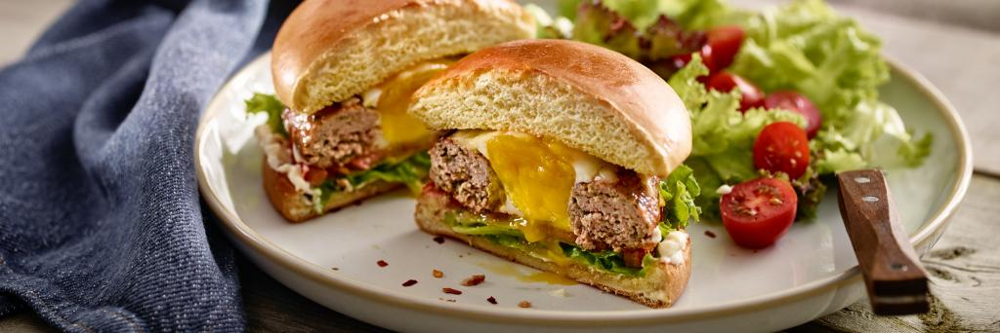

Egg-in-a-hole Burgers

Description
This turkey burger contains all your favourite ingredients like ketchup,
cheese and mayo, but with a surprise on the inside an egg!
ingredient
- 1 ⅛ lb ground turkey
- 1 tbsp Worcestershire sauce
- 1 tsp dried oregano
- 1 ½ tsp dried thyme
- 1 ½ tsp dried parsley
- 3 garlic cloves, minced
- 1 tsp each salt and pepper
- 2 tbsp olive oil
- 4 eggs
- ½ cup grated cheddar cheese
- 4 hamburger buns, toasted
- 2 tbsp mayonnaise
- 2 tbsp ketchup
- 4 green leaf lettuce leaves
- 4 tomato slices
Steps
-
In a large bowl, gently mix turkey, Worcestershire, oregano, thyme, parsley,
garlic, salt and pepper until combined. Divide mixture into 3 even balls;
firmly press down creating a 5-inch (12 cm) round patty. Using a 2-inch (5
cm) round cutter, cut out the centre of each patty. Use the cut meat to make
the fourth patty. Place patties on a small parchment-lined baking sheet;
freeze for 5 minutes to firm up.
-
Preheat a 10-inch (25 cm) cast iron pan to medium-high heat. Add 1 tbsp (15
mL) olive oil. Working in batches, cook 2 patties for 6 minutes. Flip and
crack 1 egg into each hole. Cook for 4 minutes. Reduce heat to medium low,
cover and cook egg until desired doneness, about 3 to 5 minutes. Remove from
pan and sprinkle each patty with 2 tbsp (30 mL) cheese. Repeat with
remaining two patties.
-
Spread each bun bottom and top with mayonnaise and ketchup. Place patty on
bottom bun, followed by lettuce and tomato slice. Finish with bun top. Serve
warm.
-
Try jazzing it up with different toppings! Make it Greek inspired by
substituting tomato with sun-dried tomatoes and sliced olives.